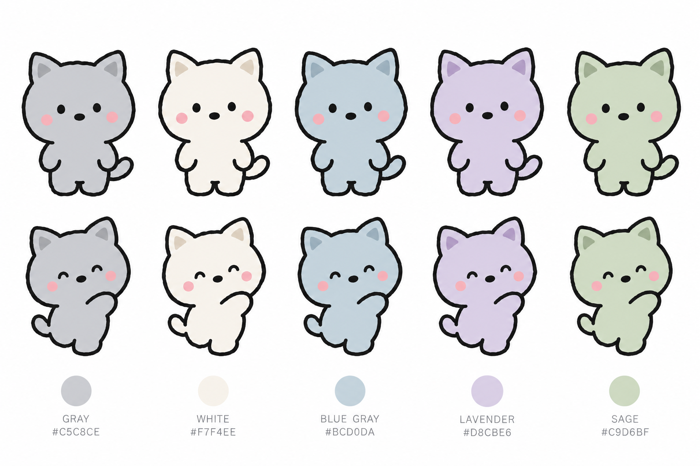

보리 컬러 후보 5안
gpt-image-2.5-sunburst · high · 1536×1024 · $0.058 · 깜자 3장 스타일 레퍼런스 · 프롬프트: bori-color-prompt.txt

- 입 없음, 코 점. 귀 끝·꼬리 끝 마커 전부 제거, 단색 바디 (귀 안쪽만 같은 색의 한 톤 어두운 색).
- 왼쪽부터 GRAY #C5C8CE · WHITE #F7F4EE · BLUE GRAY #BCD0DA · LAVENDER #D8CBE6 · SAGE #C9D6BF.
- 위 줄 정면 기본 표정, 아래 줄 3/4 웃는 표정.